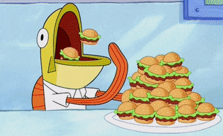

White Trash Burgers!
While the image above is a little misleading, as we'll be using Hawaiian rolls as buns, this will be White Trash Burgers!
Ingredients
- 2 Tbsp of Butter
- Pack of Hawaiian rolls
- 1lb of ground chuck
- 1 Onion
Directions
- Mold ground chuck into a patty. (small enough to fit in Hawaiian rolls)
- Season patties with salt and pepper on both sides.
- Chop onion into rings, then cut rings in half.
- Heat frying pan over medium heat
- Melt Butter
- Add chopped onions to heat
- Once onions have gotten soft, time to add the patties.
- Make sure to have a sear on both sides and cooked through, reaching internal temp of 160 degrees.
- Assemble the burger and enjoy!
Back to Homepage
